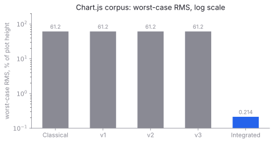
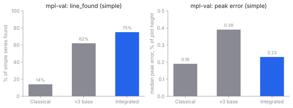
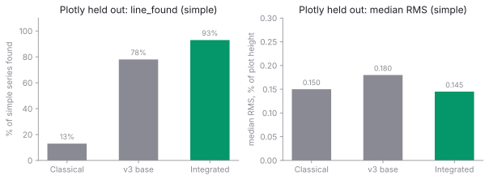
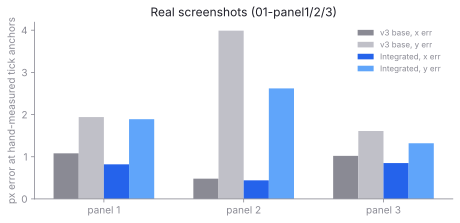

The numbers behind a chart, back out of a screenshot.
plot2data-ml takes a chart image and returns the series as CSV. A convolutional network trained on randomly rendered matplotlib and Plotly charts does the perception; sub-pixel geometry, a CTC tick reader and robust calibration do the arithmetic. Five pairs of research agents iterated for a week; the integrated reader lands here.
The scoreboard
Measured on Thu 29 Oct 2026 by the integrator, Fri 30 Oct 2026 the figures below were lifted into this site.
Every number is the integrated reader (runs/t5-chartjs/best.pt + runs/ocr1/best.pt + --tta shift) against the frozen v3 base and the classical engine.
All errors are a percentage of the plot's full height; "simple" means at most three series and fewer data points than pixel columns.

The old worst case was offset-annotation, a chart with a 1e6 multiplier at the corner.
The base reader missed the multiplier and reported the series 1,000,000 times too small (61% error).
Team 5's clutter training and team 1's structured axis decoder both fixed it; the integrated reader lands at 0.21%, 280x better than base.

Over the full set the integrated reader finds 66% of all series and 75% of simple series, up from 55/62% on v3 base. Peak error at turning points drops 42% on simple charts and 41% overall.

The classical engine finds 13% of these series; the integrated reader finds 93% of the simple ones at a median RMS of 0.145%. v3 was trained on different Plotly charts and never saw this held-out set.

Lowest x-error and y-error of any version measured, panel by panel.
On 05-retail-sales-monthly the integrated reader restores the second series that team 5's V2 training alone had regressed to one line.
Full scoreboard, end to end
| metric | Classical | v3 base | Integrated | Delta (base to int.) |
|---|---|---|---|---|
| mpl-val, 200 charts | ||||
| line_found (simple) | 14% | 62% | 75% | +12.8 pp |
| line_found (all) | n/a | 55% | 66% | +11.5 pp |
| median RMS, simple | 0.38% | 0.31% | 0.21% | -32% |
| peak-error median, simple | 0.19% | 0.39% | 0.23% | -42% |
| marker recall, simple | 5% | 64% | 81% | +16.7 pp |
| calibration within 0.5%, y | - | 78% | 90% | +12.0 pp |
| Plotly held out, 150 charts | ||||
| line_found (simple) | 13% | 78% | 93% | +15.0 pp |
| median RMS, simple | 0.15% | 0.18% | 0.145% | -21% |
| marker precision, simple | 16% | 78% | 91% | +13.0 pp |
| calibration within 0.5%, x | - | 95% | 99% | +4.7 pp |
| Chart.js corpus, 18 charts (median / worst) | ||||
| median RMS | 0.037% | 0.067% | 0.087% | +0.02 pp |
| worst-case RMS | - | 61.222% | 0.214% | -99.6% |
| series failed (missed entirely) | varies | 0 / 25 | 0 / 25 | - |
| Real screenshots (x / y px error, worst panel) | ||||
| panel1 anchors | - | 1.08 / 1.94 | 0.82 / 1.89 | best |
| panel2 anchors | - | 0.48 / 3.99 | 0.44 / 2.62 | best |
| panel3 anchors | - | 1.02 / 1.61 | 0.85 / 1.32 | best |
Honest hangs.
On easy Chart.js charts the median RMS rises 0.02 pp - a known trade of the source-pixel measurement swapped for the giant worst-case win.
On Plotly, marker_recall over all charts moved -1.6 pp from base, within noise for a 309-series set.
On mpl-val line_found, the integrated reader is 2.6 pp behind one team's isolated submission (T1), as some of T1's gains leaked when combined with t3 and t5.
Full numbers in INTEGRATION-REPORT.md.
Fifteen extractions
Each panel shows the source image, the extracted geometry drawn over a faded copy (lines in a contrasting colour, markers as tilted crosses, ticks as red crosses, label boxes blue, plot frame orange), and the first few rows of the CSV the pipeline writes. Pick any card to open its CSV.
How it works
The pipeline is a convolutional network that does the perceptual work and a short classical tail that does the arithmetic. Image in, numbers out, in about one second on a laptop GPU.
- Placement. Scale the image onto a 768x512 canvas with one affine; every output is mapped back through it.
- PlotNet. A ResNet-34 U-Net with three heads: a per-pixel class head (ink, grid, axis, tick label, legend, text, background), six heat maps for series centre lines, markers, polyline vertices, labelled x and y ticks and plot-frame corners, and an 8-D embedding trained with a discriminative loss so pixels of one series cluster together. Test-time augmentation shifts the image by a few pixels and fuses the results.
- Decode. Peaks and ridges refined to sub-pixel precision by a parabola through the log heat; series by embedding clusters; one centre-line sample per column; marker centres from the marker heat. Each line is re-measured on the source pixels as the ink-weighted centroid of the paper-to-series-colour blend.
- Tick reader. Each labelled tick is cropped and read by a small convolutional CTC recogniser trained on the synthetic labels. Values parse
1,000,45%,$1.2M,10^3,2.5e+08. A structured axis decoder from team 1 joint-reads whole axes to fix misreads. - Calibrate. RANSAC over tick pairs in pixel space, least squares over the ones that agree; linear and log both tried, the one that explains more ticks wins. Printed multipliers like
1e6are detected and applied as warnings, not silently. - Sample. A marker series returns one point per marker. A curve is resampled uniformly in x; by default at the coarsest step whose linear reconstruction stays within the trace's uncertainty, so the finest feature on the curve sets the step for the whole curve.
How the gains were earned
From a frozen baseline at 6b313e9, five pairs of research agents worked their own fronts in parallel on their own branches.
Each pair submitted a self-measured scoreboard; the integrator read all five submissions, resolved conflicts and composed them in order; a second round found and fixed one integration miss.
offset-annotation and log-log cases outright.
Round 2. A follow-up integration round found and fixed the t5-real axis_factor regression (a multiplier that touched the top label was being read into the data).
Full writeup in INTEGRATION-REPORT.md on integration/round-1.
Try it on your own chart
This site is static (open site/index.html directly, or serve it with any HTTP server).
The live reader runs on your machine via p2d.serve, a tiny FastAPI app that loads the checkpoint and reads a dropped image.
Start the backend
cd ml
source ../.venv/bin/activate
python -m p2d.serve \
--ckpt runs/t5-chartjs/best.pt \
--ocr runs/ocr1/best.pt --port 8417Open the test bench
Visit http://localhost:8417/ (drop a chart into the drop zone, or paste from the clipboard).
Or run one image at a time from the shell:
python -m p2d.pipeline chart.png \
--ckpt runs/t5-chartjs/best.pt \
--ocr runs/ocr1/best.pt \
--csv out.csv --overlay out.pngShortcut
From this directory, ./serve.sh starts the backend with the integrated checkpoint and opens the browser.